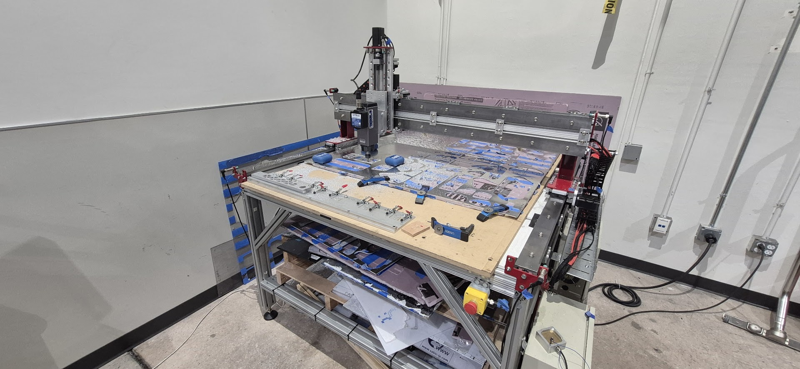
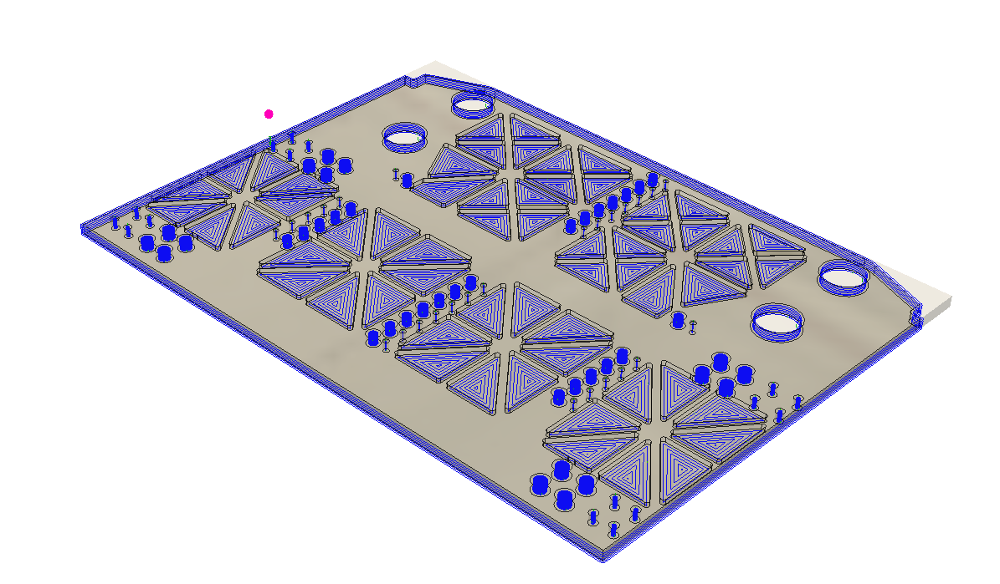
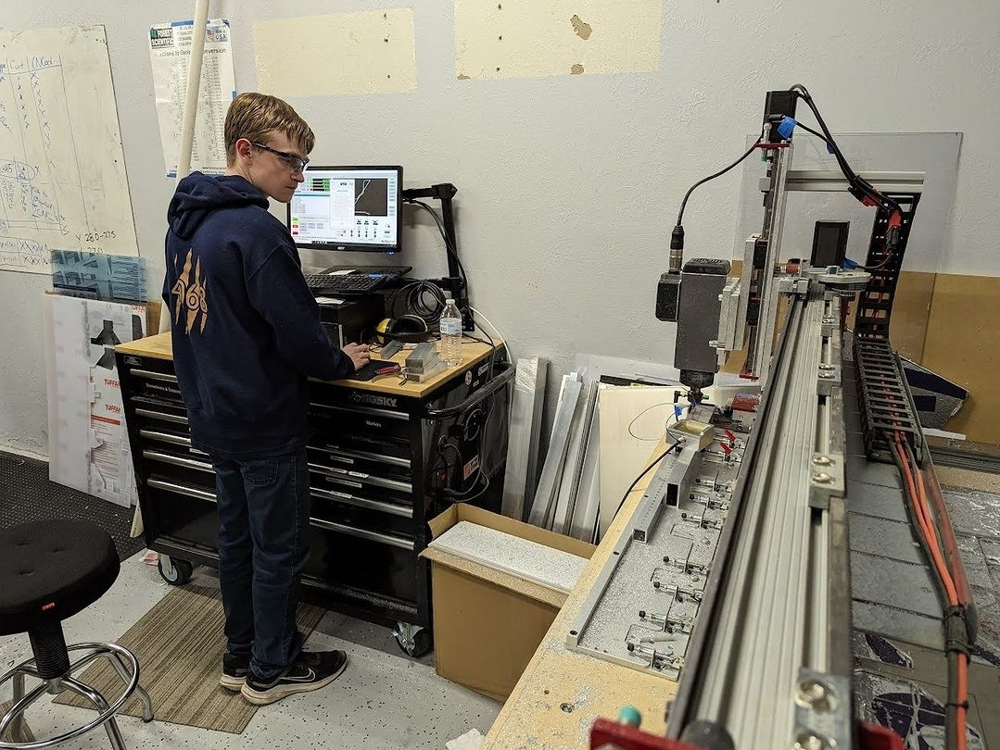
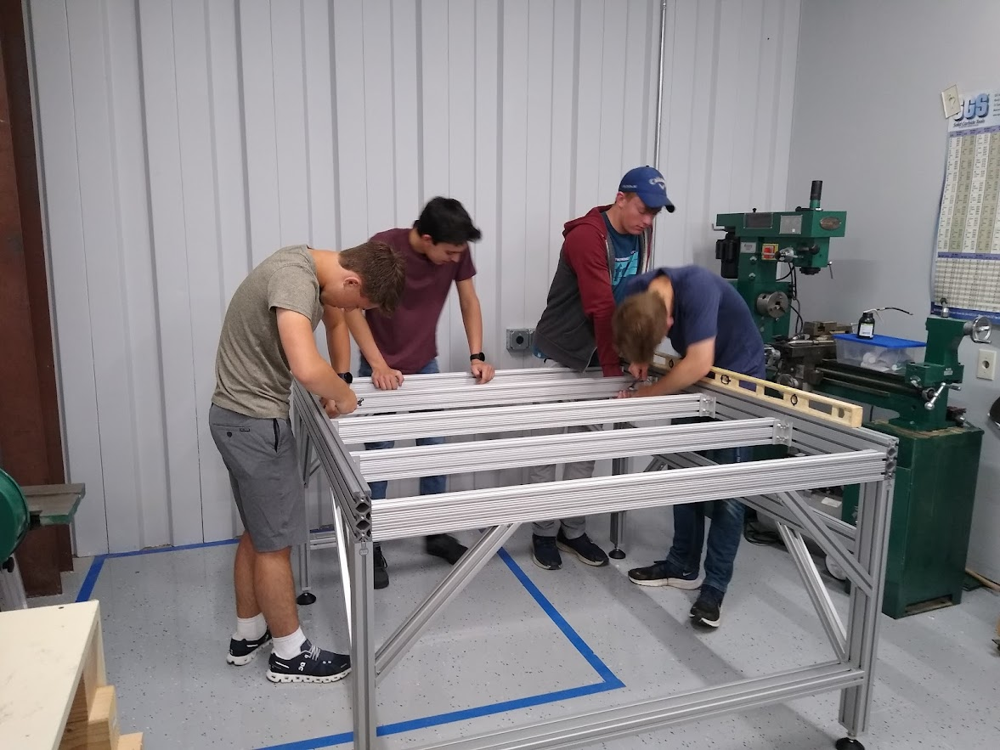
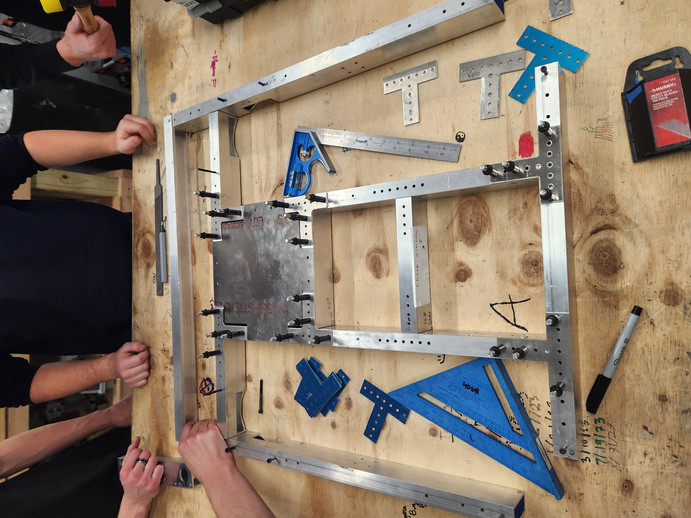
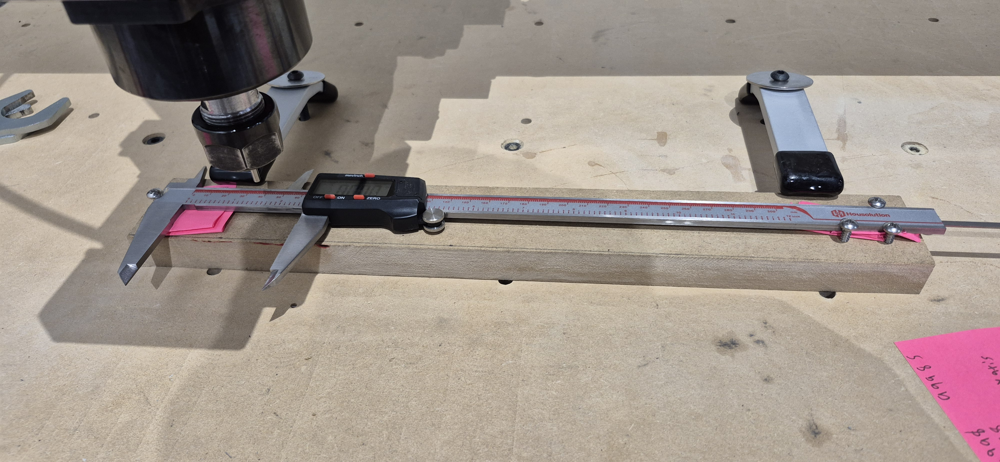
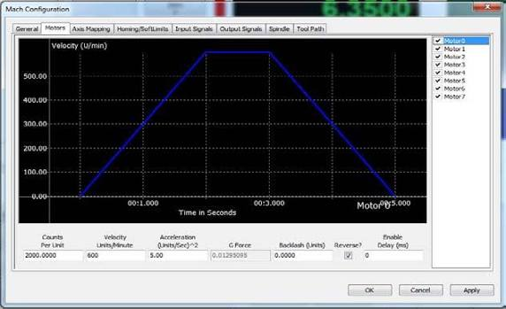
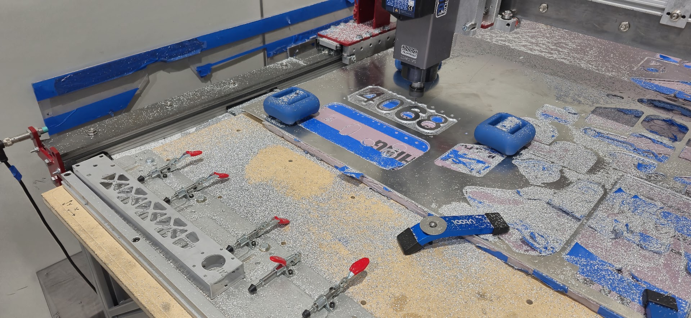

Manufacturing
CAM, workholding, tooling, sheet processing, inspection, and finished robot components.
I lead the CNC program for our FRC robotics team, managing the Avid 3-axis router to produce high-quality robot components. I train students in CAM programming, machine operation, and inspection techniques, while also tuning the machine for optimal performance and reliability

CAM, workholding, tooling, sheet processing, inspection, and finished robot components.
Training students, managing priorities, coordinating with CAD, and keeping production moving under deadlines.
Backlash, steps-per-unit, gantry synchronization, limit switches, accuracy checks, and failure recovery.




I coordinated with the CAD and Mechanical teams to manufacture parts efficiently, considering material type, stock size, and the build order of each robot subsystem. I prioritized parts based on the assembly sequence, such as producing the chassis before its supporting arms and mechanisms. I also taught students how to use Fusion 360 Manufacturing and Mach 4 while helping them understand how parts are machined and why each step is necessary. This training helped prepare future fabrication team members to work safely and efficiently.



I worked alongside another student during my first year to transition the CNC workflow to Fusion 360 and improve machining accuracy. After the CNC was moved into a new space and rebuilt, I spent a month and a half tuning it to achieve accuracy with in 0.001 inch. During the peak of the robotics season, the machine experienced a major failure and could no longer produce accurate parts. My team and I spent 1.5 weeks diagnosing, repairing, and retuning it, ultimately restoring its accuracy to within 0.001 inch. The failure was caused by operating the machine from a diesel generator while the building was still under construction, along with smaller mechanical issues involving track alignment, end stops, and motor mounts.
I compared commanded movement to measured travel, inspected bearing-hole consistency, and separated the problem into electrical, mechanical, and calibration causes instead of compensating for the error in CAD or CAM.
I inspected rack-and-pinion alignment, dual-Y gantry synchronization, motor mounts, end stops, backlash, and steps-per-unit. Mechanical issues were corrected before changing control values.
We investigated motor and controller behavior and identified unstable generator power as a major contributor while the building was under construction. Electrical instability was addressed alongside the smaller mechanical faults.
After each meaningful adjustment, I repeated calibration cuts, bearing-hole tests, and dimensional inspections until the machine consistently held 0.001-inch accuracy across the work area.





Machine accuracy is not one setting. It comes from mechanical condition, calibration, CAM decisions, workholding, inspection, and operator discipline working together.